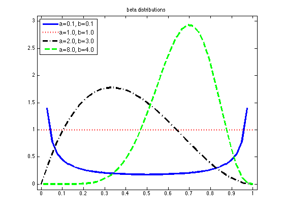

Plotting Beta Distributions
as = [0.1 1 2 8]; bs = [0.1 1 3 4];
figure;
[styles, colors, symbols] = plotColors;
legendStr = cell(length(as),1);
for i=1:length(as)
a = as(i); b = bs(i);
xs = linspace(0, 1, 40);
ps = exp(betaLogprob(structure(a, b), xs));
plot(xs , ps, [styles{i}, colors(i)], 'linewidth', 3);
hold on
legendStr{i} = sprintf('a=%2.1f, b=%2.1f', a, b);
end
legend(legendStr,'fontsize', 12, 'Location','NorthWest');
title('beta distributions')
axis([-0.02,1.02,-0.1,3.1])
printPmtkFigure('betadist');
